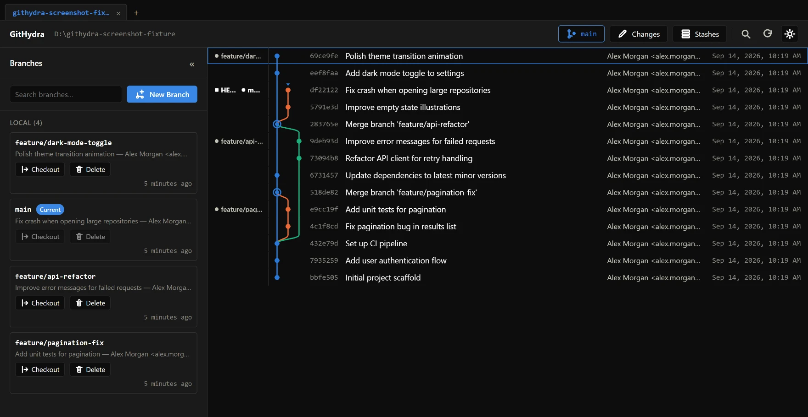

Every stop below is a real, shipped feature.
-
Commit graph
See branch topology and merges at a glance, computed live from your repo.
-
Stage & diff
Stage, unstage, discard, and commit, with a real diff for every file.
-
Branch management
Create, switch, and delete local and remote-tracking branches.
-
Merge & rebase
Full conflict-resolution UI for every conflict shape git produces, not just a text editor.
-
Stash
Save and restore work in progress, without committing it.
-
Cherry-pick
Apply one commit or many, in order, with git's own sequencer underneath.
-
Blame & history
See who changed each line, and how a file evolved over time.

Why GitHydra
-
Works with any git host, or none. GitHub, GitLab, Bitbucket, self-hosted, bare repos, submodules, worktrees. GitHydra only ever talks to your own installed git binary.
-
No forced account, no telemetry by default. No sign-in to use it, and nothing phones home unless you turn something on yourself.
-
No feature paywalls. Every capability above ships in the free build. There's no other tier.
-
No proprietary backend. Runs entirely against your local git data and your own remotes.
Looking for a free, open source GitKraken alternative? GitHydra is a GPL-licensed git GUI that behaves the same way whether your repo lives on GitHub, GitLab, Bitbucket, a self-hosted Gitea instance, or nowhere at all — a genuinely visual git client without sign-in, licensed GPL-3.0-or-later so it and any fork of it stay free.
Download GitHydra
- Windows v0.1.0+ · unsigned Download →
- macOS v0.1.0+ · unsigned Download →
- Linux v0.1.0+ · AppImage / .deb Download →
All checksums are published as SHA256SUMS.txt on every release. See the release page for full notes.